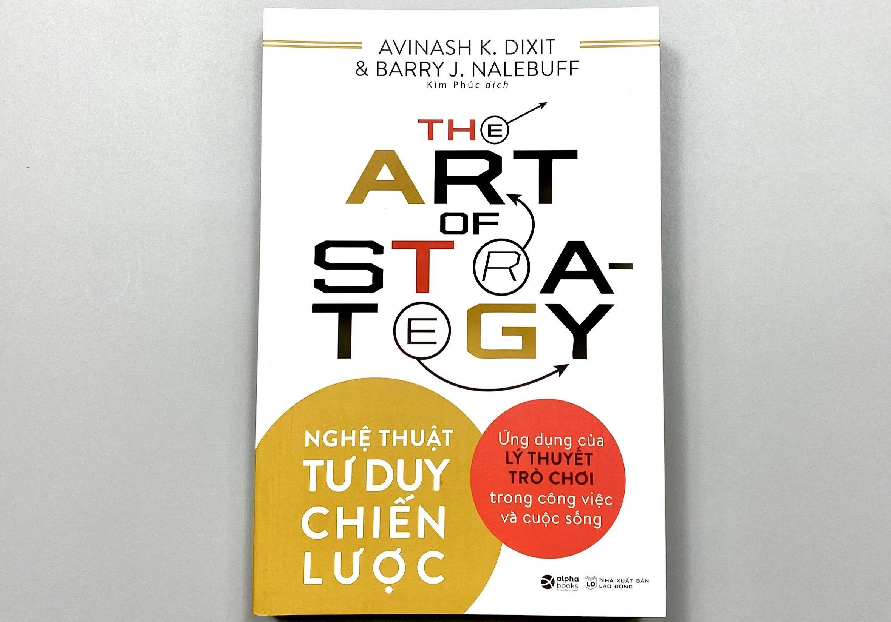

sách Kinh tế học nền tảng

Thinking Strategically của Avinash K. Dixit và Barry J. Nalebuff là một trong những cuốn nhập môn thực dụng nhất về lý thuyết trò chơi.
Ý chính của sách khá rõ:
Trong nhiều tình huống quan trọng, kết quả của bạn không chỉ phụ thuộc vào quyết định của bạn — mà còn phụ thuộc vào việc người khác phản ứng thế nào với quyết định đó.
Đó chính là cốt lõi của tư duy chiến lược
Cuốn sách dạy gì?
• Nghĩ trước một bước — và nghĩ cả bước người khác sẽ nghĩ.
Không chỉ hỏi “mình nên làm gì?” mà hỏi “nếu mình làm vậy, đối phương sẽ phản ứng ra sao?”
• Trò chơi tuần tự và trò chơi đồng thời
Có lúc người chơi hành động lần lượt, có lúc cùng lúc.
Mỗi kiểu đòi hỏi cách tính toán khác nhau.
• Cân bằng Nash
Một trạng thái mà không bên nào có động cơ đổi chiến lược đơn phương.
• Cam kết đáng tin (credible commitment)
Nhiều khi muốn thắng, bạn phải khiến đối phương tin rằng bạn thật sự sẽ làm điều mình nói.
• Hợp tác và phản bội
Nhiều tình huống kiểu thế lưỡng nan của tù nhân cho thấy: điều hợp lý cho từng cá nhân đôi khi lại tạo kết quả tệ cho tất cả
Ví dụ rất “Thinking Strategically”
Hai công ty cùng bán sản phẩm.
Nếu cả hai cùng hạ giá, cả hai cùng thiệt.
Nhưng nếu một bên nghĩ bên kia sẽ giữ giá, nó có động cơ hạ giá trước để giành thị phần.
Đây là cách cuốn sách buộc người đọc luôn nhìn vào mối quan hệ chiến lược, chứ không chỉ quyết định độc lập.
Nếu tóm cực ngắn
Cuốn này không chỉ nói về toán hay kinh tế.
Nó dạy một thói quen tư duy:
Muốn quyết định đúng, phải tính cả phản ứng của người khác vào quyết định của mình.
Một nhận xét khá sát từ thảo luận cộng đồng trên Reddit là cuốn này rất mạnh ở ví dụ thực tế và khả năng biến khái niệm game theory thành tình huống đời thường, dù vài chương có thể hơi dày nếu chưa quen nền tảng kinh tế
Nếu bạn thích mạch sách kiểu này, bước tiếp theo rất hợp là The Art of Strategy — bản hiện đại hơn, mạch lạc hơn của chính hai tác giả.
Nếu muốn, tôi cũng có thể tóm *5 nguyên tắc thực chiến nhất của Thinking Strategically áp dụng vào công việc, đàm phán và cạnh tranh nơi làm việc*.